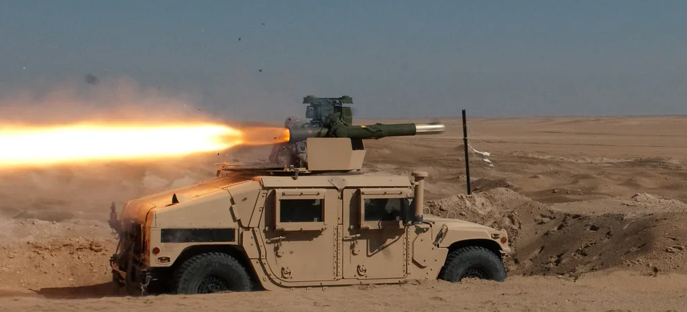

북한, 원산서 동해로 탄도미사일 발사…6일 만에 재도발
합동참모본부는 12일 오전 6시 무렵 북한 원산 일대에서 동해상으로 발사된 탄도미사일로 추정되는 발사체 1발을 포착했다고 밝혔다. 군 당국은 발사 직후부터 이지스함과 지상 레이더 등 감시 자산을 총동원해 비행 궤적을 추적하며 정확한 제원과 낙하 지점을 정밀 분석하고 있다고 설명했다. 아직 미사일의 구체적인 종류나 비행거리, 고도 등은 공식 발표되지 않은 상태로, 군 관계자는 한미 정보당국이 실시간으로 세부 자료를 공유하며 추가 분석을 진행 중이라고 전했다. 군은 발사 시점과 장소 등 기본적인 사실관계를 먼저 공개한 뒤, 정밀 분석이 끝나는 대로 세부 내용을 추가로 발표할 방침이다.
이번 발사는 지난 6일 북한이 단거리 탄도미사일을 쏘아 올린 지 불과 엿새 만에 이뤄진 것이어서 더욱 주목받고 있다. 북한이 한 주 간격도 두지 않고 연달아 미사일 도발에 나서면서, 군 당국은 향후 발사 빈도가 더 잦아질 가능성까지 염두에 두고 감시 태세를 한층 강화하고 있는 것으로 알려졌다. 합참은 관련 동향을 예의주시하며 만일의 상황에 대비해 즉각 대응할 수 있는 태세를 유지하고 있다고 강조했다. 군 안팎에서는 북한이 단기간에 잇달아 발사에 나선 배경을 두고 다양한 분석이 제기되는 가운데, 무기체계 시험과 대외 메시지 발신이라는 이중 목적이 동시에 깔려 있을 수 있다는 시각도 나온다.

군 안팎에서는 이번 발사가 오는 17일부터 27일까지 진행될 예정인 한미 연합연습 '을지 자유의 방패(UFS)'를 겨냥한 무력시위 성격이 짙다는 해석이 나온다. 북한은 그동안 한미 연합훈련을 앞두고 미사일 발사나 포병 사격 등으로 반발 의사를 표시해 왔으며, 이번에도 훈련 개시를 열흘가량 앞두고 존재감을 과시하려는 의도가 반영된 것으로 군 당국은 분석하고 있다. 매년 여름 실시되는 한미 연합훈련을 전후해 북한이 미사일 발사를 반복해 온 전례에 비춰볼 때, 이번 UFS 기간에도 추가 도발이 이어질지 주목된다.
일본 정부도 이번 발사에 즉각 반응했다. 일본 해상보안청은 해당 발사체가 일본의 배타적경제수역(EEZ) 밖으로 낙하한 것으로 추정된다고 발표하며 인근 해역을 항행 중인 선박과 항공기에 주의를 당부했다. 일본 방위성 역시 발사 직후 관련 정보를 수집해 우리 군, 미군과 공유한 것으로 전해졌으며, 한미일 3국 정보당국 간 공조 체계도 신속히 가동된 것으로 알려졌다. 일본 정부는 별도의 국가안전보장회의 관련 부서를 통해 상황을 지속적으로 점검하고 있다고 밝혔다.

국가안보실은 발사 직후 국방부와 합참 등 관계기관이 참석하는 긴급 안보상황점검회의를 열었다. 회의에서는 군의 즉각적인 대응태세를 유지하도록 지시하는 한편, 이번 발사가 우리 안보에 미치는 영향을 분석·평가하고 필요한 후속 조치를 점검한 것으로 전해졌다. 정부는 북한의 추가 도발 가능성에 대비해 감시 자산을 총동원해 관련 동향을 계속 주시하겠다는 방침이며, 상황 전개에 따라 관계부처 간 후속 회의도 이어갈 것으로 알려졌다.
외교가에서는 이번 발사로 한반도 긴장이 다시 고조될 수 있다는 우려가 제기된다. 특히 한미 연합훈련 기간과 겹쳐 북한의 추가 반발 조치가 이어질 가능성도 배제할 수 없는 상황이다. 정부는 대화의 문은 열어두되 도발에는 단호히 대응한다는 기존 원칙을 유지하며, 국제사회와의 공조를 통해 한반도 안정을 지켜나가겠다는 입장을 재확인했다. 정부 안팎에서는 향후 북한의 태도 변화 여부가 연합훈련 이후 한반도 정세의 향방을 가늠할 중요한 변수가 될 것이라는 관측도 나온다.